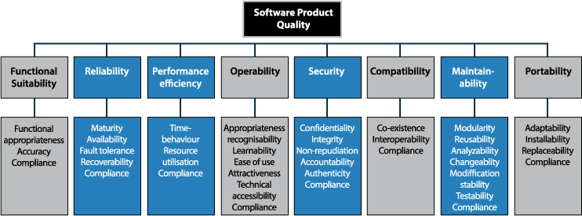
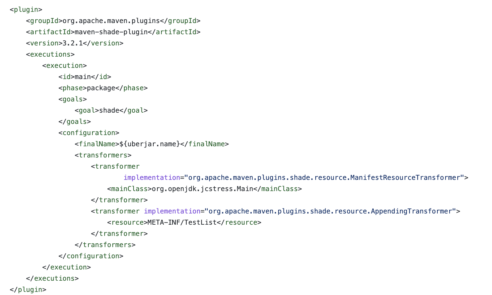
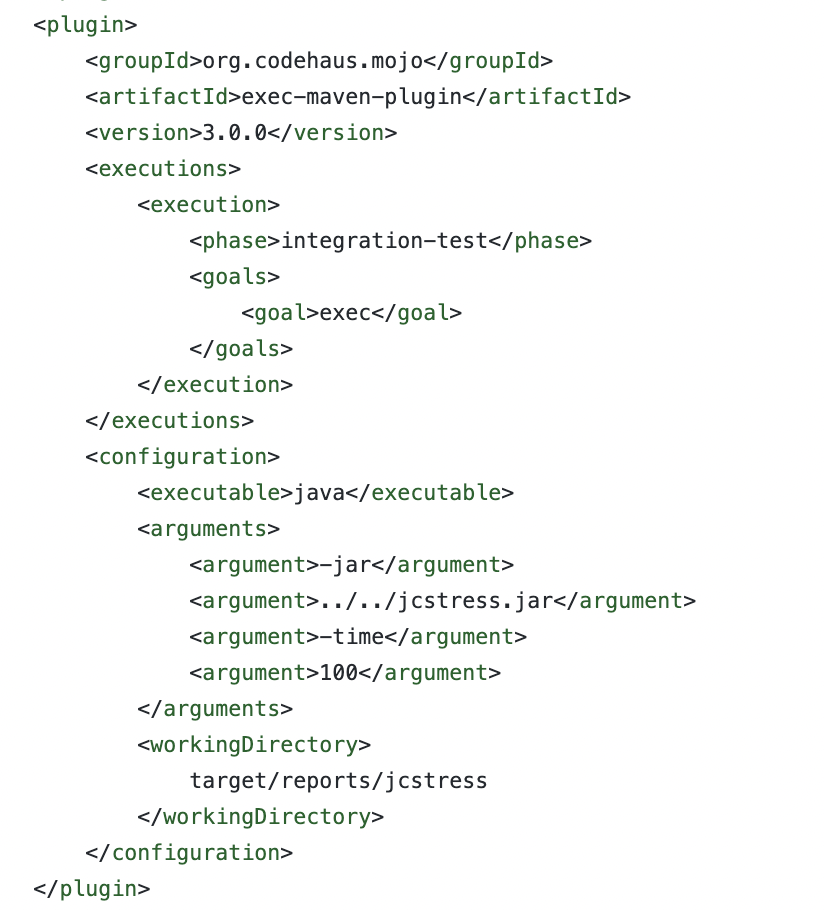

Detecting concurrency issues with JCStress
Juan Antonio Breña Moral

Follow the talk on your smartphone:

Example repository:

"Testing shows the presence of bugs, not their absence"
- Edsger W. Dijkstra"Quality is never an accident. It is always the result of intelligent effort."
- John Ruskin"At the heart of any reasonable definition of thread safety is the concept of correctness. Correctness means that a class conforms to its specification."
- Brian Goetz, Java Concurrency in Practice, 2006Agenda
- Who I am
- Expectations
- Preamble
- Root causes
- Tooling: JCStress
- Takeaways
- References
- Q&A
Who I am
Juan Antonio Breña Moral
|
|
Engineering in Industrial Organization (M.S.) @ ICAI Head of Developer Relations @ Amadeus for developers Associate Professor @ ICAI STEAM Teacher @ Space Math @juanantoniobm | Github |
Expectations
- Generate awareness about potential concurrency issues in your projects.
- Review root causes of concurrency issues.
- Learn when to use JCStress in your projects.
Preamble
Imagine development with some business requirements:
Feature: Sum 2 numbers
Scenario: Sum 2 positive numbers
Given the POST endpoint /api/v1/sum2numbers
When the client sends a request
Then the response includes the sum of the 2 parameters
Preamble
The code has a good Unit Test:

Preamble
The code has a good Test Coverage:

Preamble
The code has a good Mutation Coverage:

Preamble
- The code has a good Score in Sonar.
- The code doesn´t have any Memory leak.
- The code has a good Throughput.
- The code has a good Pipeline Support.
Preamble
But..., one day we received an email from a User about unexpected results...

Preamble
Developer: "Weird, everything is fine on my side..."
Preamble
Developer: "...and using the data provided by the User, the new test doesn´t reproduce the issue in my local dev environment."
Preamble
Developer: "...maybe, I didn´t read the JLS (Java Language Specification), section 17.4. about Concurrency and the JSR-133 Java Memory Model and Thread Specification"
Preamble

Developer: "...but now, we are already in Production..."
Preamble
Java is a multithreading & multiprocessing programming language and Shared Memory is the Inter-Process Communication (IPC) technique for Threads.
And every Java developer needs to know it.
Root causes
Non0-funcional requirements
Do you properly define the non-functional requirements for your projects?

Root causes
Non-funcional requirements
ISO 25010
ISO 25010, titled “System and software quality models”, is a software quality standard.
Source: https://iso25000.com/index.php/en/iso-25000-standards/iso-25010
Root causes
Concurrency models
Not all programming languages followed the same design criterias to tackle the concurrency.
Root causes
Concurrency models
How concurrency evolves in Java:
| Java version | Key features | Release data |
|---|---|---|
| Java 1.0 | Java OS Threads | 23/01/1996 |
| Java 1.5 | JSR 133, java.util.concurrent.* | 30/09/2004 |
| Java 1.7 | Fork/join framework | 07/07/2011 |
| Java 1.8 | CompletableFuture | 18/03/2014 |
| Java 19 | Virtual Threads, Structured Concurrency | 20/09/2022 |
** Records (Java 14)
Root causes
Design patterns that impact you
CDI, Contexts and Dependency Injection allows the developer to manage the lifecycle of stateful components.

Root causes
Design patterns that impact you
Functional programming
public class EulerProblem20 {
Function factorial = limit -> IntStream.iterate(limit.intValue(), i -> i - 1)
.limit(limit)
.mapToObj(BigInteger::valueOf)
.reduce((n1, n2) -> n1.multiply(n2)).get();
Function sumDigits = value -> value.toString().chars()
.mapToObj(c -> String.valueOf((char) c))
.mapToLong(Long::valueOf)
.reduce(0L, Long::sum);
public Long solution(Long limit) {
return factorial
.andThen(sumDigits)
.apply(limit);
}
}
Root causes
Design patterns that impact you
Functional programming
public class EulerProblem01 {
private final int THREE = 3;
private final int FIVE = 5;
BiPredicate< Integer, Integer > isMultiple = (l, i) -> l % i == 0;
Predicate< Integer > isMultiple3 = number -> isMultiple.test(number, THREE);
Predicate< Integer > isMultiple5 = number -> isMultiple.test(number, FIVE);
public Integer solution(Integer limit) {
return IntStream.range(1, limit).boxed()
.filter(isMultiple3.or(isMultiple5))
.reduce(0, Integer::sum);
}
}
Root causes
Design patterns that impacts you
Java records are classes that act as transparent carriers for immutable data.
public record Person (String name, String address) {}
Root causes
Modern hardware
It is important to undertand how the JVM interacts with the hardware.

Source: https://jenkov.com/tutorials/java-concurrency/java-memory-model.html
Tooling: JCStress
- Introduction
- A JCStress tour
- Do plugins exist?
- Who is using JCStress?
- Limitations
- The next step
Tooling: JCStress
Introduction
The Java Concurrency Stress (jcstress) is an experimental harness and a suite of tests to aid the research in the correctness of concurrency support in the JVM, class libraries, and hardware.
Project: https://github.com/openjdk/jcstressTooling: JCStress
A JCStress tour
@JCStressTest
@Outcome(id = "1, 1", expect = ACCEPTABLE_INTERESTING, desc = "Both actors came up with the same value: atomicity failure.")
@Outcome(id = "1, 2", expect = ACCEPTABLE, desc = "actor1 incremented, then actor2.")
@Outcome(id = "2, 1", expect = ACCEPTABLE, desc = "actor2 incremented, then actor1.")
@State
public class API_01_Simple {
int v;
@Actor
public void actor1(II_Result r) {
r.r1 = ++v; // record result from actor1 to field r1
}
@Actor
public void actor2(II_Result r) {
r.r2 = ++v; // record result from actor2 to field r2
}
}
Tooling: JCStress
A JCStress tour
Suppose we want to see if the field increment is atomic. We can make test with two actors, both actors incrementing the field and recording what value they observed into the result object. As JCStress runs, it will invoke these methods on the objects holding the field once per each actor and instance, and record what results are coming from there. Done enough times, we will get the history of observed results, and that would tell us something about the concurrent behavior.
Tooling: JCStress
A JCStress tour
@JCStressTest
@Outcome(id = "1", expect = ACCEPTABLE_INTERESTING, desc = "One update lost: atomicity failure.")
@Outcome(id = "2", expect = ACCEPTABLE, desc = "Actors updated independently.")
@State
public class API_02_Arbiters {
int v;
@Actor
public void actor1() {
v++;
}
@Actor
public void actor2() {
v++;
}
@Arbiter
public void arbiter(I_Result r) {
r.r1 = v;
}
}
Tooling: JCStress
A JCStress tour
Another flavor of the same test as APISample_01_Simple is using arbiters. Arbiters run after both actors, and therefore can observe the final result. This allows to observe the permanent atomicity failure after both actors finished.
Tooling: JCStress
A JCStress tour
public class API_04_Nesting {
@JCStressTest
@Outcome(id = "1, 1", expect = ACCEPTABLE_INTERESTING, desc = "Both actors came up with the same value: atomicity failure.")
@Outcome(id = "1, 2", expect = ACCEPTABLE, desc = "actor1 incremented, then actor2.")
@Outcome(id = "2, 1", expect = ACCEPTABLE, desc = "actor2 incremented, then actor1.")
@State
public static class PlainTest {
int v;
@Actor
public void actor1(II_Result r) {
r.r1 = ++v;
}
@Actor
public void actor2(II_Result r) {
r.r2 = ++v;
}
}
@JCStressTest
//Another test
}
Tooling: JCStress
A JCStress tour
@Outcome(id = "1, 1", expect = ACCEPTABLE_INTERESTING, desc = "Both actors came up with the same value: atomicity failure.")
@Outcome(id = "1, 2", expect = ACCEPTABLE, desc = "actor1 incremented, then actor2.")
@Outcome(id = "2, 1", expect = ACCEPTABLE, desc = "actor2 incremented, then actor1.")
public class API_05_SharedMetadata {
@JCStressTest
@JCStressMeta(API_05_SharedMetadata.class)
@State
public static class PlainTest {
int v;
@Actor
public void actor1(II_Result r) { r.r1 = ++v; }
@Actor
public void actor2(II_Result r) { r.r2 = ++v; }
}
@JCStressTest
@JCStressMeta(API_05_SharedMetadata.class)
//Another test
}
Tooling: JCStress
A JCStress tour
@JCStressTest
@Description("Sample Hello World test")
@Ref("http://openjdk.java.net/projects/code-tools/jcstress/")
@Outcome(id = "1, 1", expect = ACCEPTABLE_INTERESTING, desc = "Both actors came up with the same value: atomicity failure.")
@Outcome(id = "1, 2", expect = ACCEPTABLE, desc = "actor1 incremented, then actor2.")
@Outcome(id = "2, 1", expect = ACCEPTABLE, desc = "actor2 incremented, then actor1.")
@State
public class API_06_Descriptions {
int v;
@Actor
public void actor1(II_Result r) {
r.r1 = ++v;
}
@Actor
public void actor2(II_Result r) {
r.r2 = ++v;
}
}
Tooling: JCStress
A JCStress tour
As you see, tests using actors or arbiters require the use of results objets, which accept different primitives:
- I: int
- Z: boolean
- F: float
- J: long
- S: short
- B: byte
- C: char
- D: double
- L: object
Source: https://docs.oracle.com/javase/tutorial/java/nutsandbolts/datatypes.htmls
Tooling: JCStress
A JCStress tour
How to run the examples?
./gradlew clean jcstress --tests "API_01_Simple"
./gradlew clean jcstress --tests "API_02_Arbiters"
./gradlew clean jcstress --tests "API_04_Nesting"
./gradlew clean jcstress --tests "API_05_SharedMetadata"
./gradlew clean jcstress --tests "API_06_Descriptions"

Tooling: JCStress
Do plugins exist?
There is a plugin for Gradle, but not for Maven.
plugins {
id 'io.github.reyerizo.gradle.jcstress' version '0.8.13'
}
ext {
jcstressVersion = '0.15'
}
jcstress {
jcstressDependency "org.openjdk.jcstress:jcstress-core:${jcstressVersion}"
verbose = true
timeMillis = "200"
spinStyle = "THREAD_YIELD"
}
Tooling: JCStress
Do plugins exist?
But using Maven, you could run your JCstress tests:
 Source: https://github.com/gortiz/jcstress-mvn-testTooling: JCStress
Do plugins exist?
But using Maven, you could run your JCstress tests:
Source: https://github.com/gortiz/jcstress-mvn-test
Tooling: JCStress
Who is using JCStress?
Tooling: JCStress
Who is using JCStress?
Tooling: JCStress
Who is using JCStress?
Tooling: JCStress
Who is using JCStress?
In what stage is JCStress?

Tooling: JCStress
Limitations
- Lack of a Maven plugin
- Plugins should be hosted in the main repository
- A very low level solution
- Solution is not integrated with JUnit
- What happens if your class has IO?
- It is applicable to all cases
Tooling: JCStress
Limitations
- If your class has a complex hierarchy, structured in a complex way or involves IO, JCStress will not help:
In that case, you will have to test without this tool. ü§∑‚Äç‚ôÇÔ∏è
Tooling: JCStress
The next step
Set up a session with your Dev team to review the samples from JCStress repository:
Takeaways
- JCStress is not a silver bullet.
- Minimize the number of beans in your projects.
- Maximize immutability in your projects.
- Understand all concurrent features provided by the JVM.
- Invest time in refactoring; some concurrency scenarios could be implemented with another approach.
- Run recurrent training about concurrency for your development teams, if necessary.